Consolas y videojuegos
Consolas y videojuegos Consolas y videojuegos
Consolas y videojuegosKirby's Dream Land
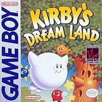Game Boy - 1992 - Plataformas
Kirby's Adventure
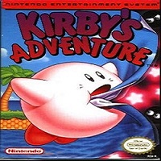NES - 1993 - Plataformas
Kirby's Pinball Land
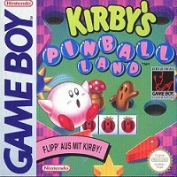Game Boy - 1993 - Pinball
Kirby's Dream Course
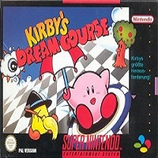SNES - 1994 - Golf
Kirby's Dream Land 2
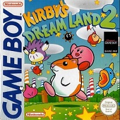Game Boy - 1994 - Plataformas
Kirby's Avalanche
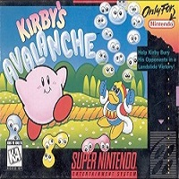SNES - 1995 - Rompecabezas
Kirby's Block Ball
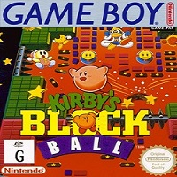Game Boy - 1996 - Rompecabezas
Kirby's Star Stacker

Game Boy - 1996 - Rompecabezas
Kirby Super Star
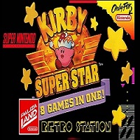SNES - 1996 - Plataformas
Kirby no Omocha Hako
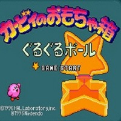SNES Satellaview - 1996 - Minijuegos
Kirby's Dream Land 3
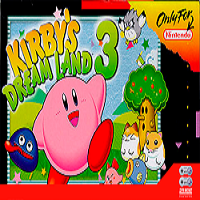SNES - 1998 - Plataformas
Kirby No Kira Kira Kids
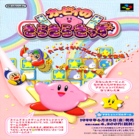SNES - 1998 - Rompecabezas
Kirby 64: The Crystal Shards
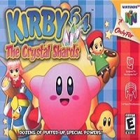Nintendo 64 - 2000 - Plataformas 3D
Kirby: Tilt 'n' Tumble
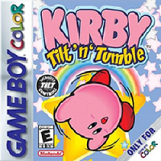Game Boy Color - 2000 - Fantasía
Kirby: Pesadilla en Dream Land
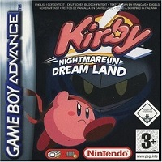Game Boy Advance - 2002 - Plataformas
Kirby Air Ride
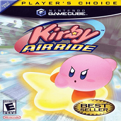GameCube - 2003 - Carreras
Kirby y el Laberinto de los Espejos
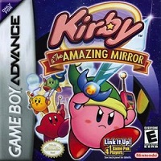Game Boy Advance - 2004 - Plataformas
Kirby: El Pincel del Poder
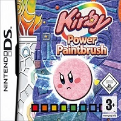Nintendo DS - 2005 - Plataformas
Kirby: ¡Roedores al ataque!
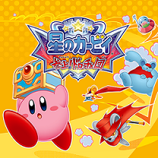Nintendo DS - 2006 - Plataformas
Kirby Super Star Ultra
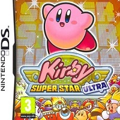Nintendo DS - 2008 - Plataformas
Kirby's Epic Yarn
Wii - 2010 - Plataformas
Kirby Mass Attack
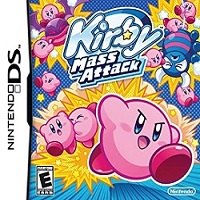Nintendo DS - 2011 - Plataformas
Kirby's Return to Dream Land
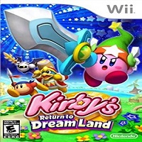Wii - 2011 - Plataformas
Kirby's Dream Collection: Special Edition
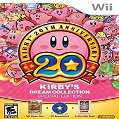Wii - 2012 - Colección
Kirby: Triple Deluxe
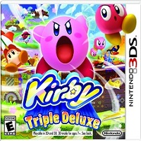Nintendo 3DS - 2014 - Plataformas
Dedede's Drum Dash Deluxe
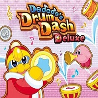Nintendo 3DS - 2014 - Ritmo
Kirby Fighters Deluxe
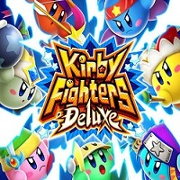Nintendo 3DS - 2014 - Lucha
Kirby and the Rainbow Curse
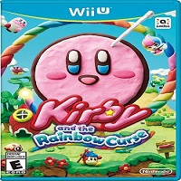Wii U - 2015 - Plataformas
Kirby: Planet Robobot
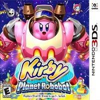Nintendo 3DS - 2016 - Plataformas
Team Kirby Clash Deluxe
>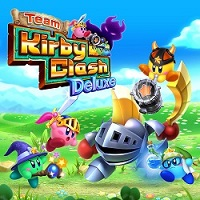Nintendo 3DS - 2017 - Acción
Kirby's Blowout Blast
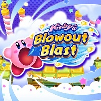Nintendo 3DS - 2017 - Plataformas 3D
Kirby Battle Royale
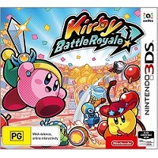Nintendo 3DS -2017 - Acción y lucha
Kirby Star Allies
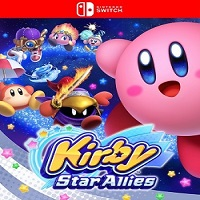Nintendo Switch - 2018 - Plataform
Super Kirby Clash
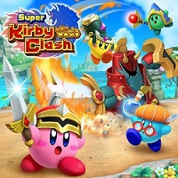Nintendo Switch - 2019 - Acción
Kirby Fighters 2
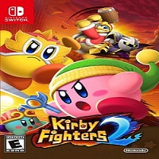Nintendo Switch - 2020 - Acción y lucha
Kirby and the Forgotten Land
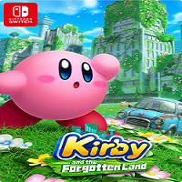Nintendo Switch - 2022 - Aventura